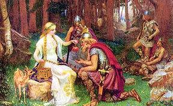

İskandinav mitolojisi
- Nors veya İskandinav mitolojisi, İskandinav insanlarının Hıristiyanlık öncesi dinleri, inanışları ve efsaneleridir. M.Ö. 1000 yıl sonrasında, birçok avrupa ülkesinde Indo-Avrupa dili konuşuluyordu. M.Ö. ilk bin yılın ortalarında Alman kabilelerinden Güney İskandinavya ve Kuzey Almanya bölgesinde yaşamışlardı. Onların yayılmaları ve ilerlemeleri M.Ö. 2. yüzyılla kadar devam etti. Bu yüzden İskandinav ve Alman mitolojileri aynı temeller üzerindedir ve birçok ortak noktası vardır. Snorri Sturluson'un Eddası (1179-1241) bu efsanelerin çoğunu içerir. Mitolojinin yaratılış detaylarını çok çeşitli kaynaklara dayanarak sadece Snorri kaleme almıştır.
- Başlangıçta boşluk vardı (Ginnungagup). Dünya daha var olmadan önce 11 nehir akan Niffleheim'da ölüm var oldu. Niflheim'ın güneyinde başka bir sıcak dünya daha oluştu; Muspell; Devlerin koruduğu yer. Devler buraya Stur yani Siyah dediler. Niflheim'ın nehirleri donmuştu. Bu nehirlere Ginnungagup dendi. Günün birinde Muspell'deki kıvılcımlar nehirlerin üzerine düştü ve nehirleri eritti. Erimiş nehirlerden oluşan damlacıklar Ymir'i şekillendirdi ve Ymir'in terinden diğer dişi ve erkek devler oluştu.
- Yaratılış efsanesinin bir başka versiyonu daha vardır:
- Eriyen damlalar en ilkel inek şeklini aldılar. Audhumla; sütüyle Ymir'i besleyen inek. Audhumla aynı zamanda tuz parçalarını yalayarak bu bloklara ilk insan şeklini verir. İlk insan Buri. Buri'nin, bir devin kızı olan Bolthor ile evli bir oğlu vardır; Bor. Bolthor'u Odin,Vili ve Ve birleşerek Bor'a uygun bir biçimde yarattılar.Ve şeklinden dolayı Ymir'i öldürdüler. Ve sonra iki tane ağaç yarattılar. Düşünen, nefes alan, duyan ve de görebilen iki ağaç... Bu ağaçlar insan ırkının ilk modelleriydi. Erkeğe Askr (ash tree → kül ağacı), dişiye de Embla (Sarmaşık) dediler. Ardından Asgard'ı yarattılar. Tanrıların meskenini. Snorri diğer birçok versiyonda kader ağacı Yggdrassil'den bahseder. Onun ne kadar ihtişamlı olduğunu, dünyanın merkezinde nasıl görkemli bir şekilde yükseldiğini tasvir eder. Ağacın altındaki kader feminen formu olarak tasvir edilir ve insan hayatının buradan başladığı düşünülür.
- Bazı versiyonlarda da Tanrıların büyük meclisinin burada toplanıp kararlar aldığından bahsedilir. Bu ağaç üç köklüdür; Bu köklerden biri cehenneme kadar uzanır, diğeri devler ülkesine gider ve sonuncu kök de insanların dünyasına gider. Bütün dünyanın mutluluğu bu ilk ağaca bağlıydı. İskandinav tanrıları iki grupta toplanır; Aesir ve Vanir tanrıları. Aesir'in en önemli tanrıları; Odin, Thor ve bazende Tyr, Vanir'de ki önemli tanrılar ise Njord, Frey ve Freya dır. Vanir; Zenginlik, verimlilik ve doğurganlığı simgeler. Doğurganlığı sembolize eden toprak ve denizle sembolleştirilmiştir Vanir. Aesir; Diğer bütün değerlerle sembolleştirilmiştir. Odin bir büyücüdür, tanrıların şefidir ve tüm kahramanların başıdır. Thor, çekicin tanrısıdır ve havaya hükmeder. Birçok öyküde bu ikili barış içinde yaşarlar ve birbirlerine yardım ederler. En önemli mitolojik hikâyeler uzak geçmişte bir zamanda, Vanir ve Aesir arasında çok vahşi bir savaşın çıktığından bahseder. Bazı bilginler bu savaşın Alman ırkının diğer ırklarla karşılaşmasının bir yansıması olarak görürler. Georges Dumezil ve Jan De Vries, tanrılar arasındaki savaş ve bölünmenin Indo-Avrupa mitolojisinin bir parçası olduğunu ortaya çıkardılar.
- Bilinen üçlü; sihirsel güçleri adilce kullanan Odin ve Thor tarafından yaratılmıştı.Tyr savaş tanrısı ve Vanir bolluk tanrısı beraberce hiyerarşiyi bozguna uğratmışlardı. İskandinav mitolojisinde Odin ve Thor arasındaki çelişki, bütün tanrılık statülerinin Vanir'de kalmasıyla başladı. Aesir'e bir kadın olan Gullveig'i (Altın sarhoşu) göndererek yalvardılar. Daha sonra da savaş çıktı. Her iki tarafta tükendikten sonra, iki taraf kendi grup üyelerini değiş tokuş etti. Vanir Njord ve oğlu Frey'i ,Aesir ise Mimir ve Hoenir'i verdi. Bu geçici barış tüm tanrıların toplanarak Kvasir' i yaratmalarıyla kutlandı. Kvasir barış ve mutluluğun sembolü daha sonra kurban edildi. Ve kanından tanrılar için bir içki yaratıldı. Böylece Kvasir Tanrıları sarhoş eden ve ozanlara ilham veren bir içecek olmuştu.
- Önemli bir başka mitolojik efsane de Balder ve Loki'yi anlatır. Odin'in oğullarından Balder burada akıl, sevgi ve bilginin tanrısı olarak karşımıza çıkar. Cennette Glitnir denilen bir yeri korumaktadır. Her türlü anlaşmazlıkta bütün tanrılar onun adaletine güvendiklerinden ona gelirler ve burada Balder'in adaleti sağlaması beklenir.Ve Balder adaleti yerine getirir. Loki Aesir tarafından evlat edinilmiş bir devdir. Loki ve Odin aralarında bir dostluk antlaşması yapmışlardı. Bir gece Balder kendi ölümü hakkında çok rahatsız edici bir rüya görür.Annesi Frigg, su, ateş, doğadaki bütün elementlere, kuşlara, canavarlara, toprak ve taşlara, Balder'a zarar vermemeleri için yemin ettirir. Böylece Balder Ölümsüz olur. Bundan sonra Aesir Balder'ı ortalarına alıp onunla eğlenmeye başlar. Ona küçük ok, taş vs. şeyler atarlar. Bu yeminden dolayı Balder sadakatsizliklle karşı karşıya kalmıştır. Loki bu dramayı görünce merak eder ve kadın kılığında Frigg'in yanına giderek ona neler olduğunu sorar. Frigg de ona yeminden bahseder ve yeminin içine katılmayan tek şeyin ökse otu olduğunu da sözlerine ekler. Bunu duyan Loki hemen Aesir'e sunulmak üzere ökse otu getirir. Bunu kör tanrı Hoder'e kendi isteği ile verecek ve böylelikle Balder'a acı çektirme oyununa o da katılabilecektir. Balder'a ökse otundan yapılmış ok atılır ve Balder ölür. Aesir bu olayın suçlusundan intikam almak ister ama bulundukları yerin kutsallığından dolayı bunu yapamazlar. Balder Hel'e gidecektir,yani tüm ölülerin gittiği yere çünkü o bir savaşçı değil ve bir savaşta ölmemiştir dolayısıyla da kahramanların yeri olan Valhalla'ya gidemez. Balder Hel'den ancak Odin onun çıkmasına izin verdiğinde ve aynı zamanda yaşayan ve ölü olan her canlının onun için göz yaşı döktüğü zaman çıkabilecektir. Aksi takdirde sonsuza dek orada kalmaya mahkûm olacaktır. Bu kehanet üzerine Aesir bütün dünyaya elçiler yollar. Doğaya, insanlığa, tanrılara ve onlara Balder için göz yaşı dökmelerini emreder. Bunu tüm yaşayanlar kabul eder. Tabii ki Devlerin kraliçesi Thork (kılık değiştirmiş Loki) hariç. Ve ağlamamak için de kesin kararlıdır. Aesir Thork'un Loki olduğunu farkettiğinde, onun bu şeytanca oyunlarına son vermesi için zincire vurur.
- Kehanete göre Loki bir gün bir şekilde zincirlerini kıracak ve bu bütün şeytanların canavarların ve devlerin tanrılara karşı olan büyük savaş Ragnarok'ta kaybedeceğinin işareti olacaktır. Ragnarok'ta Odin kurt Fenrir tarafından yenilir. Daha sonra da Fenrir Odin'in oğlu Vidar tarafından öldürülür. Bu olaydan sonra tanrılar arasındaki korkunç savaşlar başlar. Tanrı Heimdall ve Loki karşı karşıya gelip birbirlerini öldürene kadar savaşırlar. Ve daha sonra Dünya bir ateşle yok edilir. Evren denizin dibine batmaya başlar. Bu son tekrar doğuşla kendini devam etirir. Dünya denizden tekrar yükselir, yeşillenir, bitkilerle dolup taşar. Aesir'in ölü oğulları Asgard'a geri döner ve atalarının yolunu izlerler.
Tanrılar ve özellikleri
- Balder - Aydınlık, barış, yeniden doğum ve adalet tanrısı. Eşi: Nanna
- Bor - Odin, Vili ve Ve'nin babası. Eşi: Bestla
- Bragi - Şiir tanrısı. Eşi: Idunn
- Buri - İlk tanrı ve Borr'un babası.
- Dagr - Gündüz tanrısı, Delling ve Nott'un oğlu.
- Delling - Şafak tanrısı ve Dagr'ın Nott'dan olan oğlu.
- Eir - İyileştirme tanrısı.
- Forseti - Adalet, barış ve doğruluk tanrısı. Balder'in ve Nanna'ın oğlu.
- Freyja - Bereket, sağlık, aşk, güzellik, sihir, kehanet, savaş, çarpışma ve ölüm tanrıçası. Eşi: Od
- Frey - Erkeklik gücü tanrısı. Eşi: Gerd
- Frigg - Evlilik ve annelik tanrıçası. Eşi: Odin
- Fulla - Frigg´in hizmetçisi.
- Gefjun - Bereket ve saban tanrıçası.
- Hel - İskandinav mitolojisindeki yeraltı diyarı Hel'in kraliçesi.
- Heimdall - Asgard'ın koruyucusu.
- Hermod - Odin'in oğlu.
- Hlin - Teselli tanrıçası.
- Hod - Kış tanrısı.
- Hoenir - Sessiz tanrı.
- Idunn - Gençlik tanrıçası. Eşi: Bragi.
- Jord - Yeryüzü tanrıçası. Thor'un annesi.Odin'in oğlu.
- Kvasir - İlham tanrısı.
- Lofn - Aşk tanrıçası.
- Loki - Düzenbaz, yaramazlık, sorun ve ateş tanrısı. Eşi: Sigyn
- Mani - Ay tanrısı.
- Mimir - Odin´in amcası.
- Nanna - Balder'in karsı ve Forseti'nin annesi.
- Nerthus - Tacitus tarafından bahsedilen tanrıça.
- Njord - Deniz, rüzgar, balık ve bolluk tanrısı.
- Norn - Kaderin üç tanrıçası; Urd(Yazgı), Skuld(varlık, ya da gelecek), Verdandi(ihtiyaç, ya da hediye).
- Nott - Gece tanrıçası, Narvi'in kızı ve Aud, Jord ve Dagr'in annesi.
- Odin - Aesir'in efendisi. Bilgelik ve savaş tanrısı. Eşi: Frigg.
- Rynkar- Zaman tanrısı
- Saga - Tam olarak bilinmeyen bir tanrıça, Frigg'in başka bir ismi olduğu tahmin edilimekte.
- Sif - Thor'un karısı.
- Sjofn - Aşk tanrıçası.
- Skadi - Kış tanrıçası Njord'ün eski karısı.
- Skirnir- Frey'in habercisi ve hizmetçisi.
- Skuld - (varlık, ya da gelecek) Üç norn tanrıçadan biri.
- Snotra - İhtiyat tanrıçası.
- Sol - Güneş tanrıçası.
- Thor - Gökgürültüsü,fırtınalar ve savaş tanrısı. Eşi: Sif.
- Tyr - Savaş ve savaşçı tanrısı.
- Ull - Beceri, av ve duello tanrısı. Sif'in oğlu.
- Urd - (Yazgı) Üç norn tanrıçadan biri.
- Vali - İntikam tanrısı. Odin'in oğlu
- Var - Sözleşme tanrıçası.
- Ve - Üç yaratılış tanrısından biri. Odin ve Vili'nin kardeşi.
- Verdandi - (ihtiyaç, ya da hediye) Üç norn tanrıçadan biri.
- Vidar- Dev Grid ve Odin'in oğlu.
- Vili - Üç yaratılış tanrısından biri. Odin ve Ve'nin kardeşi.
- Vor - Bilgelik tanrıçası.

İskandinav tanrıları ölümlüydü, ve ancak Idunn'un elmaları ile Ragnarok'a kadar yaşayabilirlerdi. Resim: J. Penrose, 1890.